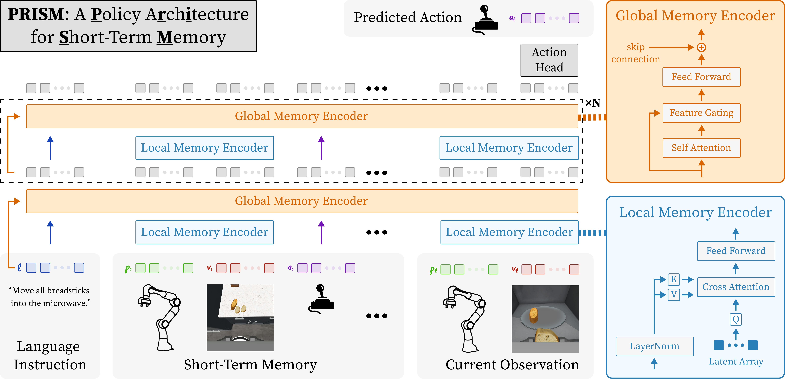

1 Robotics and AI Institute 2 The University of Texas at Austin
PRISM applies gated attention to filter information retrieved from history and hierarchical summarization to scale attention over long interaction histories, improving causal transformer policies trained with behavior cloning by improving robustness to noisy histories and reducing computation.

ReMemBench is designed to evaluate short-term memory in visuomotor policies. Guided by the cognitive science literature, we decompose short-term memory into several functional categories. Diversity in categories promotes developments in general memory mechanisms and not custom, non-generalizable solutions for a particular task. Each category is instantiated with two household-manipulation tasks. Below are videos of each category.
We evaluate PRISM on a real-world adaptation of 'Wash and Return to Container' task from ReMemBench. Below is the visualization of two successful rollouts of PRISM.
PRISM significantly outperforms prior approaches on ReMemBench, achieving 41% average success rate compared to Long Short-Term Memory (12%), Mamba (25%), Transformer XL (15%), Gated Transformer XL (26%), Linear Attention (22%), Past-Token Prediction (15%), and Scene Memory Transformer (36%). Recurrent models struggle with long-horizon credit assignment due to vanishing gradients, while attention-based methods fail to effectively filter irrelevant information from memory.
Table II: Average success rate across ReMemBench task categories (20 trials × 3 seeds).
PRISM with memory (n=256) demonstrates substantial improvements on standard visuomotor benchmarks, even when memory is not explicitly required. On RoboCasa, PRISM improves from 32% (no memory) to 43% (+11 points), also exceeding GR00T-N1-2B by 11 points. On LIBERO, PRISM achieves an average success rate of 89%, improving by 12 points over its no-memory variant (77%) and outperforming Open Vision-Language-Action by 15 points, indicating that short-term memory helps disambiguate visually identical states requiring different actions.
Table III: Success rates on RoboCasa and LIBERO. PRISM with memory (n=256) outperforms its no-memory variant and strong pretrained baselines.
PRISM exhibits strong scalability with increasing memory size on ReMemBench, with success rate increasing by 0.26 as the memory window expands from n=1 to n=512. This continuous improvement without saturation demonstrates PRISM's ability to extract useful information from temporally extended memory, making it well-suited for tasks requiring reasoning over extended temporal horizons.
Performance scaling with increasing memory capacity (n=1 to n=512).
TODO